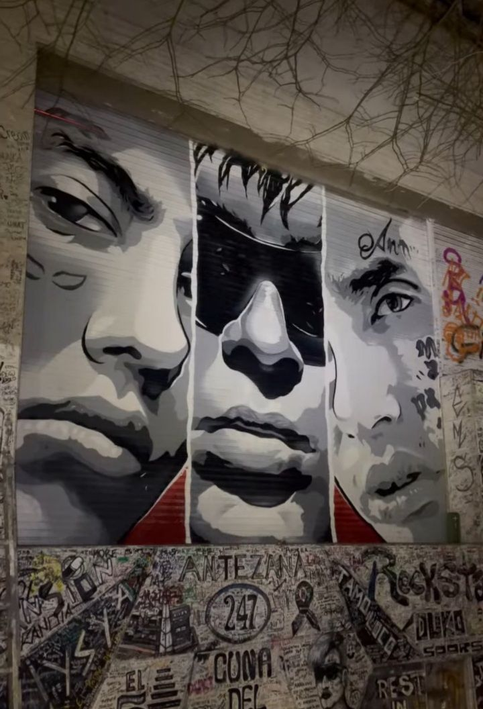

Biografía
Mauro surgió de sus participaciones en las batallas de freestyle, en especial de la competencia El Quinto Escalón, la cual al volverse un fenómeno viral en YouTube, le dio su primera cuota de popularidad cuando se proclamó campeón en 2016. Su victoria le permitió lanzar su primer sencillo y trabajar con el productor discográfico Omar Varela meses después. En 2017, irrumpió en la escena musical argentina gracias a su primer sencillo que se posicionó en el top 10 de las listas de éxitos, "She Don't Give a FO", y al año siguiente formó parte del grupo "Modo Diablo" junto a YSY A y Neo Pistea, cuyos sencillos "Quavo" y "Trap N' Export" ayudaron a popularizar y formar un masivo culto de seguidores alrededor del género del trap en Sudamérica. Tras romper su relación con Varela, en 2019 Mauro lanzó su álbum de estudio debut, Súper sangre joven, de manera independiente, que fue certificado platino en Argentina, y que contuvo sus exitosos sencillos «Goteo» y «Hitboy». Fue seguido por Desde el fin del mundo (2021), el cual marcó su primer número 1 en álbumes digitales en Argentina, y que también fue certificado platino. Tras albergar cuatro fechas en el Estadio José Amalfitani durante 2022, convirtiéndose en el primer artista de su género en lograr un concierto en un estadio en su país, Mauro lanzó su tercer álbum de estudio, Antes de Ameri, en 2023. Fue nominado por su sencillo "Goteo" y su colaboración en el álbum YHLQMDLG del puertorriqueño Bad Bunny en la canción "Hablamos Mañana" para los Premios Grammy Latinos 2020. Fue el artista argentino más escuchado en el mundo en Spotify durante 2021, según la revista Rolling Stone.
Para 2016 Duki ya sería uno de los participantes más concurrentes del Quinto Escalón, que a mediados de ese año se volvería un fenómeno viral en YouTube. En la sexta fecha, Duki se coronó campeón por primera vez al vencer al rapero Nacho en la final, lo que le valdría su primera cuota de popularidad en la escena.
No vendo trap
En noviembre del 2016, Duki daría su primer paso hacia su carrera musical, lanzando el sencillo «No vendo trap» en YouTube, producto de su sesión ganada luego de vencer en El Quinto. La canción tuvo un gran atención en las redes sociales por su renombre en las batallas de rap, y a la semana ya había cruzado la barrera del millón de visitas.
2017-2018
Para fines del 2016 e inicios del 2017, Duki continuaría participando en el Quinto Escalón. Con la competencia ya siendo la más renombrada de toda Latinoamérica, Duki formaría parte de las batallas más virales del torneo junto a MKS. Una de las batallas más virales sería contra Beelze y Paulo Londra, que en ese momento era el enfrentamiento de los dos participantes con las canciones más virales del momento, con "Relax" de Paulo Londra y "No Vendo Trap" de Mauro. La final de esa fecha enfrentarían a Duki y MKS contra Klan y Replik, que sería la última participación del primero en una batalla en plaza, y sería una de las más reconocidas y vistas de la historia de la competencia. Duki en concierto, 2019 Gracias a su creciente popularidad, Duki empezó a componer y producir varias canciones para poder lanzar su carrera musical. En el estudio de BoomBox empezó a colaborar con el productor discográfico Omar Varela del sello MUEVA Records. La primera canción lanzada producto de esta colaboración fue «Hello Cotto», que alcanzó los 15 millones de reproducciones en las primeras semanas desde su estreno en septiembre de 2017. En noviembre, sacaría "She Don't Give a FO", en colaboración con Khea, que alcanzó el puesto 7 en la lista de éxitos de Argentina, y fue certificado como oro por la PROMUSICAE de España. Dos semanas después, participaría del sencillo "Loca" de Khea y Cazzu, y que sería la primera canción de trap argentino que sobrepasaría las 100 millones de reproducciones de YouTube (y más tarde, la de 200 millones), alcanzando el tercer puesto en el ranking de Argentina, y siendo certificado oro por la RIAA. El último sencillo que lanzó en 2017 (y también el primer videoclip lanzado a principios de 2018 en su canal de YouTube) fue «Rockstar», el cual terminó de esclarecer el nuevo posicionamiento del género de trap en Argentina.
Modo Dibalo
Durante el verano del 2018, Duki dio más de 40 fechas de conciertos en boliches de Punta del Este y Villa Gesell, que lanzaron aún más su popularidad. En febrero debía dar un show en General Pico, pero Mauro se fue sin dar el concierto con las entradas ya vendidas, debido a que los organizadores se retrasaron con el pago para el cantante. Mauro más tarde aclaró que «no había visto un peso». Más adelante, rompería su contrato con MUEVA, ya que se pelearía con Omar Varela porque el cantante quería que el productor fuera su DJ durante sus shows, pero este último se negó. Durante este tiempo, Duki sacaría "Si te sentís sola", que superaría los 12 millones de visualizaciones en YouTube a tan solo diez días de ser publicado, y que alcanzaría el puesto 9 en el ranking de Argentina por la CAPIF.
Mientras que el sencillo "Loca" sale nuevamente con su remix y con la participación del cantante puertorriqueño Bad Bunny, que le daría 100 millones de reproducciones más a la canción, Duki lanzó "Quavo" bajo el nombre de su nuevo grupo de trap Modo Diablo, junto a los raperos Neo Pistea e YSY A. En ese momento, Duki y su equipo decidieron dejar de actuar en boliches y empezar a hacerlo en obras de teatro y festivales. Para marzo, dieron su primer show en el Gran Rex, donde agotaron las entradas. En mayo, Duki participó de los Premios Gardel junto a una orquesta, donde compuso su sencillo "Rockstar". En abril lanzó el sencillo "Hijo de la noche", junto a Ysy A y C.R.O, que alcanzó el noveno puesto en las listas de Argentina. Durante esta época, Duki desarrollaría varias adicciones a pastillas mientras vivía en una mansión alquilada denominada como "La Mansión" en la calle Antezana 247, Villa Crespo junto a los otros integrantes de Modo Diablo. Sin embargo, ese mismo año, se acabaría yendo de esa localidad debido a su independencia a las drogas, y antecedentes como ataques de pánico. Después de rechazar a las discográficas de Sony y Universal, llenó un Luna Park, realizó una gira por España, fue jurado de la final internacional de Red Bull Batalla de los Gallos y también fue portada de la revista Rolling Stone. Para finalizar el año, Duki colaboraría con el artista chileno DrefQuila para lanzar «Sin culpa», un sencillo con una fusión entre reguetón y trap y que marcó su primer sencillo en posicionarse en el puesto n°6 de la lista Billboard Argentina Hot 100. A principios del 2019, Duki lanzaría sus sencillos «LeBron», y «Trap n' Export» (bajo el nombre de #ModoDiablo). Sin embargo, los integrantes de la agrupación decidieron separarse momentáneamente para tomar sus propios caminos. El 23 de febrero del 2019, estuvo en el primer festival de trap argentino, encabezado por el mismo Duki, y junto a Bad Bunny, Khea, Cazzu, Ecko y Kidd Keo. En marzo, fue parte de la mega colaboración del remix del sencillo de Neo Pistea, "Tumbando el club", que debutó en el puesto 3 de la lista Argentina Hot 100. Para junio, lanzó el tema para la tercera temporada de la serie de televisión argentina El marginal junto a Vicentico.
La mansión donde vivió Modo Diablo.
- Nombre: Mauro Ezequiel Lombardo Quiroga
- Fecha de nacimiento: 24 Julio 1996 (27 años)
- Nacionalidad: Argentina
- Padres: Sandra Quiroga Pérez y Guillermo Lombardo Ninaquispe
- Pareja: Emilia Mernes
- Actividad: 2016-presente
- Instrumentos: Voz
- Género Trap latino, freestyle, reguetón, hip hop, pop rap
- Discográficas: Mueva Records (2017-2018), SSJ Records (desde 2018), Dale Play (desde 2019)
- Instrimento: Voz
- Discos: 3
- EPs: 3
- Sitio web: duki.com.ar